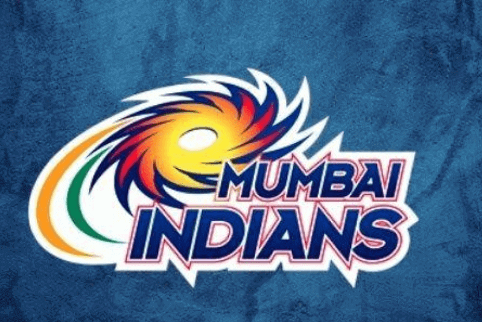
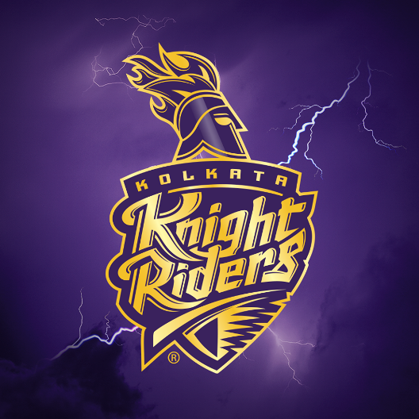
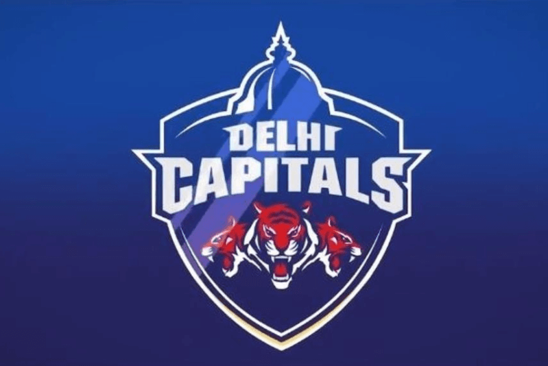
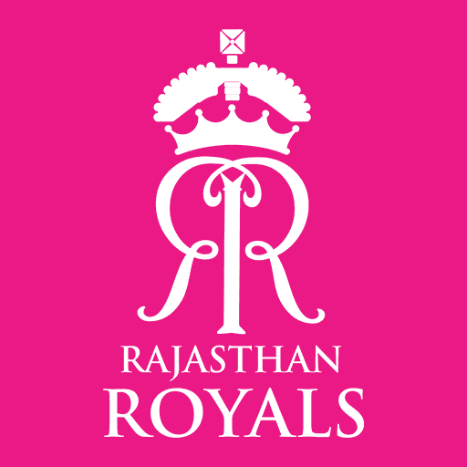
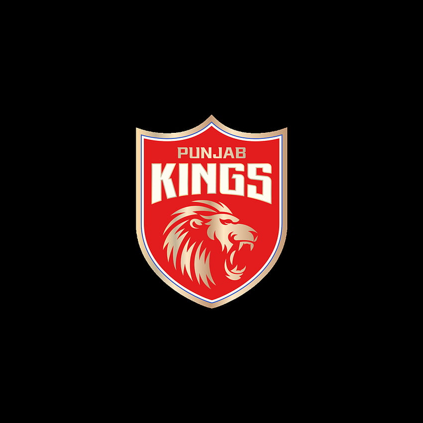
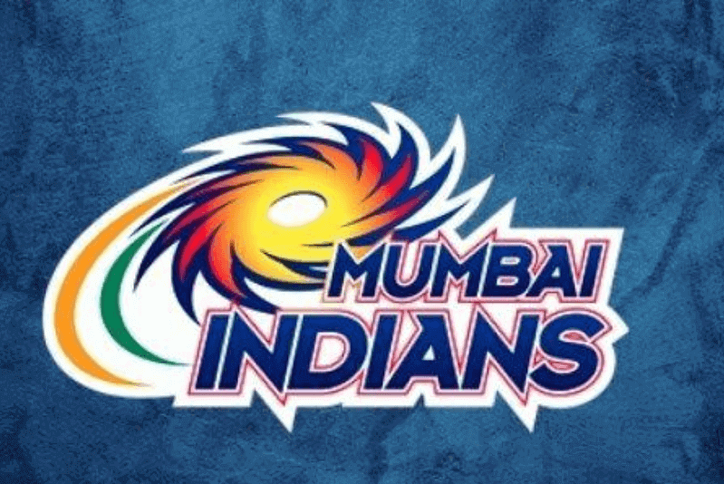
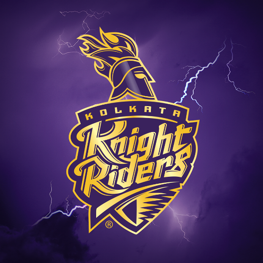
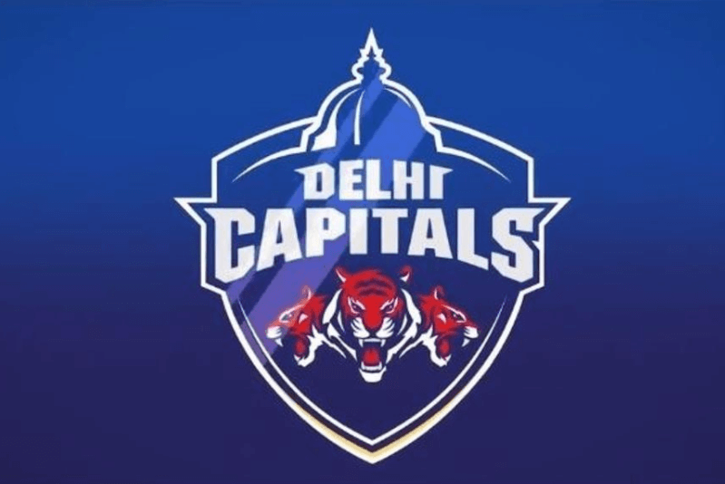
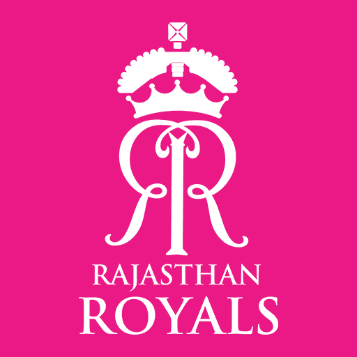
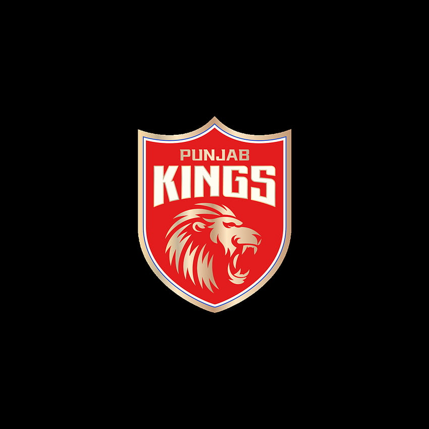

In the Indian Premier League (IPL) 2023 season, the teams have been actively engaged in building their squads through player auctions and trading. Here is a breakdown of the purse expenditure and the remaining balance for each team:
1. Royal Challengers Bangalore (RCB): RCB has spent 93.25 crore in acquiring players for their team. After these transactions, they have 1.75 crore left in their purse.
2. Kolkata Knight Riders (KKR): KKR has utilized 93.35 crore from their purse to secure players. They now have 1.65 crore remaining for further transactions.
3. Punjab Kings (PBKS): PBKS has spent 82.80 crore in procuring players for their squad. They have 12.25 crore left in their purse.
4. Chennai Super Kings (CSK): CSK has utilized 93.50 crore from their purse to acquire players. They currently have 1.50 crore remaining for additional transactions.
5. Delhi Capitals (DC): DC has spent 90.55 crore to strengthen their team. They have 4.45 crore left in their purse.
6. Rajasthan Royals (RR): RR has utilized 91.65 crore from their purse to secure players. They currently have 3.35 crore remaining for further transactions.
7. Mumbai Indians (MI): MI has spent 94.95 crore in acquiring players for their team. They have a minimal balance of 0.05 crore left in their purse.
8. Sunrisers Hyderabad (SRH): SRH has utilized 88.45 crore from their purse to strengthen their squad. They now have 6.55 crore remaining for additional transactions.
9. Lucknow Super Giants(LSG): LSG, despite already mentioned, has spent 91.45 crore in acquiring players. They have 3.55 crore left in their purse.
10. Gujarat Titans (GT): GT has spent 90.55 crore in procuring players for their team. They have 4.45 crore left in their purse.
These figures reflect the financial activities of the respective IPL teams, showcasing their investments and the remaining balance in their purses to make further player acquisitions or other team-related transactions.

 








